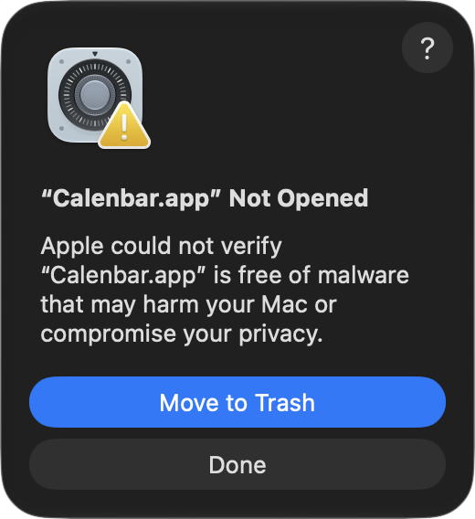
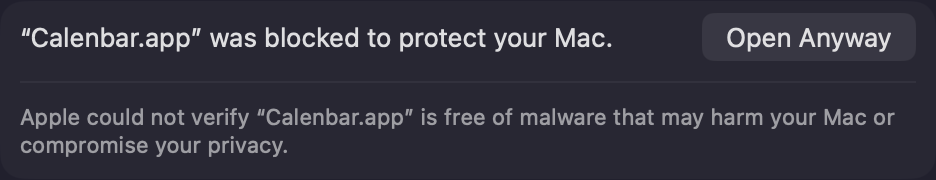
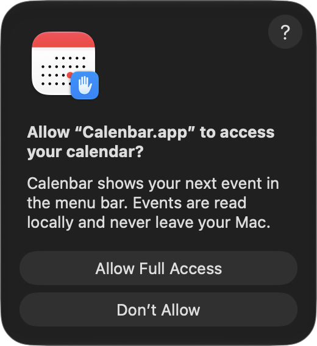
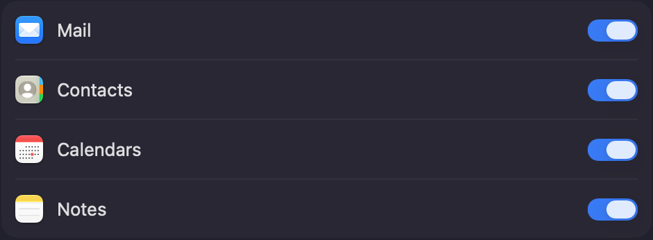
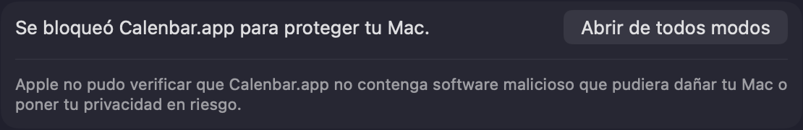
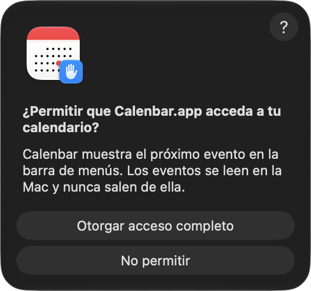
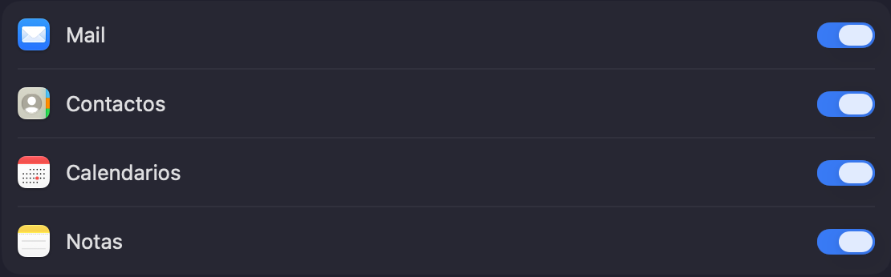

Install Calenbar
Install it with Homebrew or download it, then follow five short steps. No account needed.
From the terminal
If you use Homebrew, this replaces step 1:
brew install --cask hercase/calenbar/calenbar- Homebrew asks you to trust the tap the first time. Say yes.
- Then continue at step 2.
Or download the app
Then start at step 1.
Five steps
1
Drag Calenbar to Applications
Open the downloaded Calenbar.dmg. Drag the Calenbar icon onto the Applications folder, then open Calenbar from Applications or with Spotlight.

2
Click Done on the warning
The first time you open it, macOS says “Calenbar” Not Opened and offers to move it to the Trash. It says this about every app that isn't registered with Apple. Click Done.

3
Allow it in Privacy & Security
Open System Settings › Privacy & Security and scroll to the bottom. Click Open Anyway, confirm with your password and open Calenbar again. You only do this once.

4
Allow access to your calendars
Calenbar asks for full access to Calendars: that's how it reads your events, and they never leave your Mac. Then allow Notifications so it can warn you before a meeting.

5
Google Calendar or Outlook? Add the account once
Calenbar shows whatever your Mac's Calendar knows. In System Settings › Internet Accounts, add your Google or Exchange account with Calendars turned on. Already using the Calendar app with it? Nothing to do.

That's it. Calenbar lives in the top-right corner, starts with your Mac, and updates itself, even if you installed it with Homebrew. When a new version is ready, its panel shows Update available.
Instalar Calenbar
Instalala con Homebrew o descargala, y seguí cinco pasos cortos. No necesitás cuenta.
Desde la terminal
Si usás Homebrew, esto reemplaza el paso 1:
brew install --cask hercase/calenbar/calenbar- La primera vez Homebrew pide confiar en el tap. Decí que sí.
- Después seguí en el paso 2.
O descargá la app
Después empezá por el paso 1.
Cinco pasos
1
Arrastrá Calenbar a Aplicaciones
Abrí el archivo descargado Calenbar.dmg. Arrastrá el ícono de Calenbar sobre la carpeta Aplicaciones y después abrí Calenbar desde Aplicaciones o con Spotlight.
2
Tocá Listo en el aviso
La primera vez que la abrís, macOS dice No se abrió “Calenbar” y te ofrece moverla al basurero. Lo dice de toda app que no está registrada en Apple. Tocá Listo.

3
Permitila en Privacidad y seguridad
Abrí Configuración del Sistema › Privacidad y seguridad y bajá hasta el final. Tocá Abrir de todos modos (o Abrir igualmente, según el idioma del sistema), confirmá con tu contraseña y volvé a abrir Calenbar. Es una sola vez.

4
Permitile acceder a tus calendarios
Calenbar pide acceso completo a Calendarios: así lee tus eventos, que nunca salen de tu Mac. Después permití las Notificaciones para que te avise antes de cada reunión.

5
¿Google Calendar u Outlook? Agregá la cuenta una vez
Calenbar muestra lo que conoce el Calendario de tu Mac. En Configuración del Sistema › Cuentas de Internet, agregá tu cuenta de Google o Exchange con Calendarios activado. Si ya usás la app Calendario con esa cuenta, no hay nada que hacer.

Listo. Calenbar vive arriba a la derecha, arranca con tu Mac y se actualiza sola, aunque la hayas instalado con Homebrew. Cuando hay una versión nueva, el panel muestra Actualización disponible.